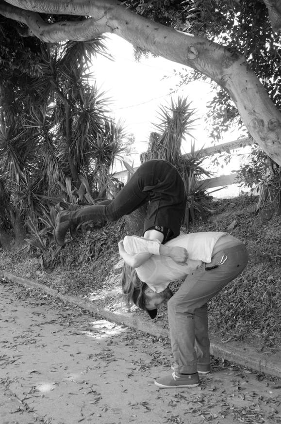

Flipbook is one consequence of an exercise performed on the streets of Los Angeles. Strangers were asked if they would participate in a flip with the artist, Emily Clayton. The sudden and passing intimacy of these public encounters was documented and then transformed into an object of private examination and vicarious experience. In the book one can witness the event of the artist literally using a stranger without reducing her partner to a mere prop. The pair are both aware of the observing camera, but it is clear that the flip requires a relationship of immediate sensitivity that exceeds the performative aspect of the act.” - Jordan Daniels
Link to Exhibition
